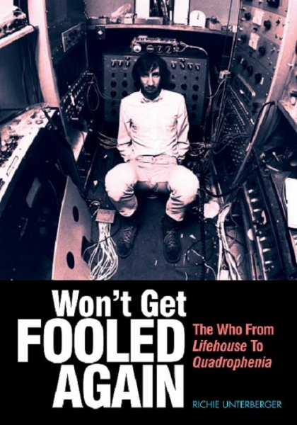

Richie Unterberger Interview
If you're a fan of the Who and you haven't heard about or read Richie Unterberger's new book, Won't get Fooled Again: The Who from Lifehouse to Quadrophenia, what the heck are you waiting for? Upon its recent release, this book became THE document of the most vital period in their career, not only because a thorough, in-depth account hasn't been provided before, but also due to the author's authoritative and clear-eyed approach to the subject. Mr. Unterberger is clearly a fan, and his enthusiasm for his subject brings life to an already fascinating story of grandiose ambition bumping up against mundane reality. Our talk should give you a taste of what's covered in the book, but if you like this band or if you're interested in a time when musicians aimed high and called themselves artists with substantial justification, you owe it to yourself to read this book.

Did you ever figure out what Lifehouse was about?
More or less. I just don’t think it would have translated very well into a movie. Its kind of like the Beach Boys Smile, where it might play better in the creator’s head than in reality. But do I really know what it was about? Yeah, I think so. He basically wanted it to be a futuristic world where rock music is really underground and that something had to be done in rebellion to the fascist government, and it was the story of how some people in our society overcame that. But it was so complicated it was very hard certainly to put that into a movie script that was going to make sense. As far as the record, I think that one of the problems is that, unlike Quadrophenia, the really strong songs that were going to be part of the Lifehouse project, the upper half is much better I think than the lower half which is kind of mundane. And I wouldn’t say that of Quadrophenia and Tommy. So, although I think I have some idea how the story would've come together, first of all there were too many elements. But also, in going over all the archived interviews I did and also some other contemporary interviews I was able to do, it really does seem to be the case that Townshend couldn't explain it well to the rest of the band and their managers.
When you’re talking about the lower half of Lifehouse, do you mean the songs that didn’t end up on Who’s Next?
Except for Pure & Easy and Mary, I would say yes, songs like Too Much of Anything…Time is Passing is ok, but it could be referring to anybody. It’s not a striking part of what he had in mind.
Some of the songs off Who’s Next represent the peaks of what they did, and it’s hard to see some of those weaker songs standing next to, say, Won’t Get Fooled Again.
I would agree with that. Also some of the strong songs he was writing at that time wouldn't have fit well in a concept album. Some of the things that ended up on the Meher Baba record or on Who Came First, I like that material, but it wouldn’t have fit in the story he had in mind for Who’s Next (LifeHouse).
It sounds like he didn’t have a way to make his ideas coherent. Like it’s hard to imagine what he was trying to do with the concerts around Lifehouse, where people were supposed to participate. Were people supposed to come up and make music? What was that all about?
It was overoptimistic given the reality of how those things work. He was really hoping for something magical to happen that hasn’t ever happened in performance, I think. He thought, maybe we could take astrological readings or maybe take snapshots of people's actual pulse or personality and use that for inspiration. Well you still can't do that with technology that's forty years advanced from 1971, and he was probably thinking wouldn’t that be great and maybe we’re the people to do it. But even if those concerts were more organized, that’s not going to happen spontaneously. The best concerts I've been to today, like I saw Jonathan Richman 6 weeks ago, and I wouldn't really expect new music to arise out of a really good Jonathan Richman concert where he and I or several audience members were creating this really interesting stuff musically. I don't think that's what happens.
He may have misread the whole “give and take” between performer and audience.
What comes to mind is that I taught a course on the Beatles this summer and when it comes to the point in the Beatles career where they start to have some real problems, I think part of the problem they had staying together and dealing with each other civilly was that they were so used to things happening their way. Up to Magical Mystery Tour, for five years everything had been a progressive triumph. And then when these things happen unexpectedly; like Apple Records is run chaotically or Yoko is hanging around in the studio and makes everybody uncomfortable, they have no familiarity with things not going right. It was that way with the Who, not financially but artistically, were they had grown very quickly. They had success after success, with a huge success at the end of the 60s with Tommy. And Townshend may have been thinking, “we’ll have an even greater success”. The only thing that wasn’t a success (the Tommy movie directed by Ken Russell) was more of an “after the fact” thing. The album was a success, the tour was a success – only after they started seriously thinking about a movie, but that was not part of the project at the beginning.
But with Lifehouse it was.
They were very intertwined, the film deal and doing the record. It was so complicated. They were also going to make the Who part of the film, part of the story, and also go on the road, presenting concerts of the Lifehouse material. It was a lot of stuff.
And so they eventually decide to abandon this. It’s strange but both these records (Who’s Next and Quadrophenia) came out of failures in a way. You get the sense that Quadrophenia was not what exactly what it was meant to be either.
The failure of Quadrophenia, at least at this distance, was that the concerts didn’t come out the way they hoped. Do you mean it was supposed to be a history of the Who’s career and it changed into something else?
Yes, but I’m probably thinking of the tour and how it has a reputation as something of a disaster.
Certainly there were disasters; I have that footage of Moon passing out (when Pete had to ask the audience if anyone played the drums). But I don’t know if you've heard those December concerts on Wolfgang’s Vault (http://www.wolfgangsvault.com/), but they’re playing fairly well. So I have the feeling that if they stuck with it they could've ironed out some of those problems. But they were discouraged not just by the technical failures but also because Tommy was immediately a big hit live, even before it had sold its first two million copies or whatever, even within weeks or days of the album being on sale, the audience really liked it.
There seems to be a consensus that The Who Sell Out is the first album top to bottom that works completely as an album rather than a collection of songs and that Who by Numbers, while strong definitely represents a falling off to a certain extent. Do you think Pete needed a concept to get him going?
I think that, more than a lot of great rock songwriters, he likes to tell stories in song. I think that really appealed to Townshend. And also probably because of the influence of Kit Lambert who, because of his father, was very well schooled classical and opera music, I think Townshend saw the concept album as the ultimate way to merge popular culture with high art. And he did it pretty successfully in a lot of cases, but sometimes he couldn’t. I think in his solo career he’s tried to do similar things, like Psychoderelict, and I don’t think the music is very good. It pains me to say that being such an admirer of what he did in the 60s and 70s.
What about the perception that Quadrophenia is like a Townshend solo album
I never really got that. The contributions of the other guys are so prominent, that it never struck me that way. The only sense in which that’s true is it’s the only Who album were Townshend writes every single song. When he had Entwistle songs on Tommy, it’s like it should be with secondary band members – they’re interesting additions because they are different, and they add something that Townshend doesn’t naturally come to. You wouldn’t say they are as good, but they are worthwhile to include, just like on some Beatles albums, where some of the Harrison songs are not up to the level of the Lennon/McCartney songs, but they’re good to have in there because they vary the pace, they’re different and they’re worthwhile.
One thing on Quadrophenia maybe he should have had more of was when Moon takes the lead vocal on Bell Boy, that really adds to the value of that song and the value of the overall record because you have another personality coming in. So if you had a “Boris the Spider” character coming in for one song, that would add to the sense of a group effort.
What’s your favorite of those concept albums?
Even though Who Sell Out was not as much of a concept album, it’s still my favorite Who album. It’s still a mystery to me why on Side 2 they stopped linking the songs with ads. It’s almost like he got discouraged and gave up completing it when he shouldn’t have. Tommy and Quadrophenia I would put about equal. I think if Lifehouse had been completed with the 20 songs, that would have been my least favorite of those records.
. . .
Buy the book here:
Listen to the full interview here:
http://www.highandlowpodcast.blogspot.com
14 September, 2011 - 16:25 — Alan Shulman